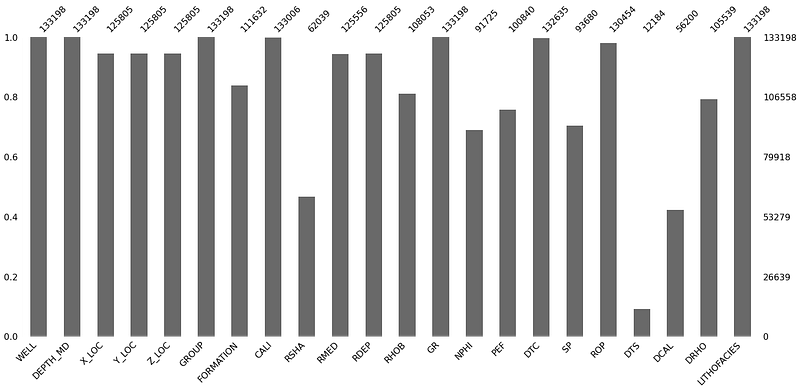
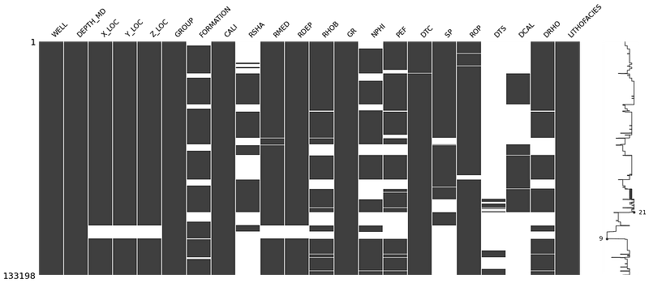
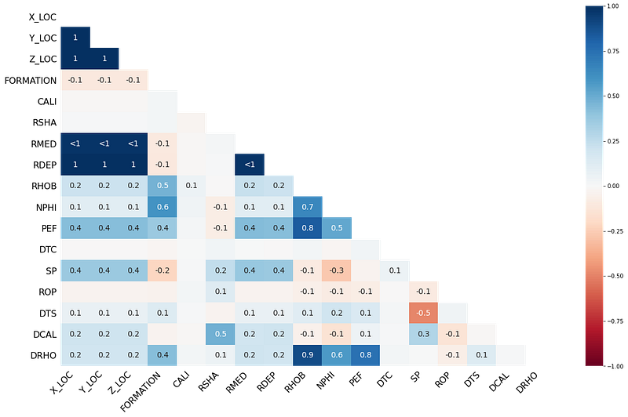
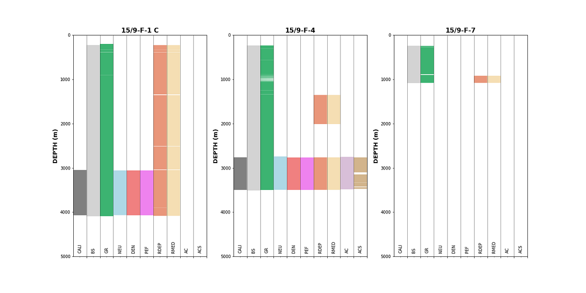
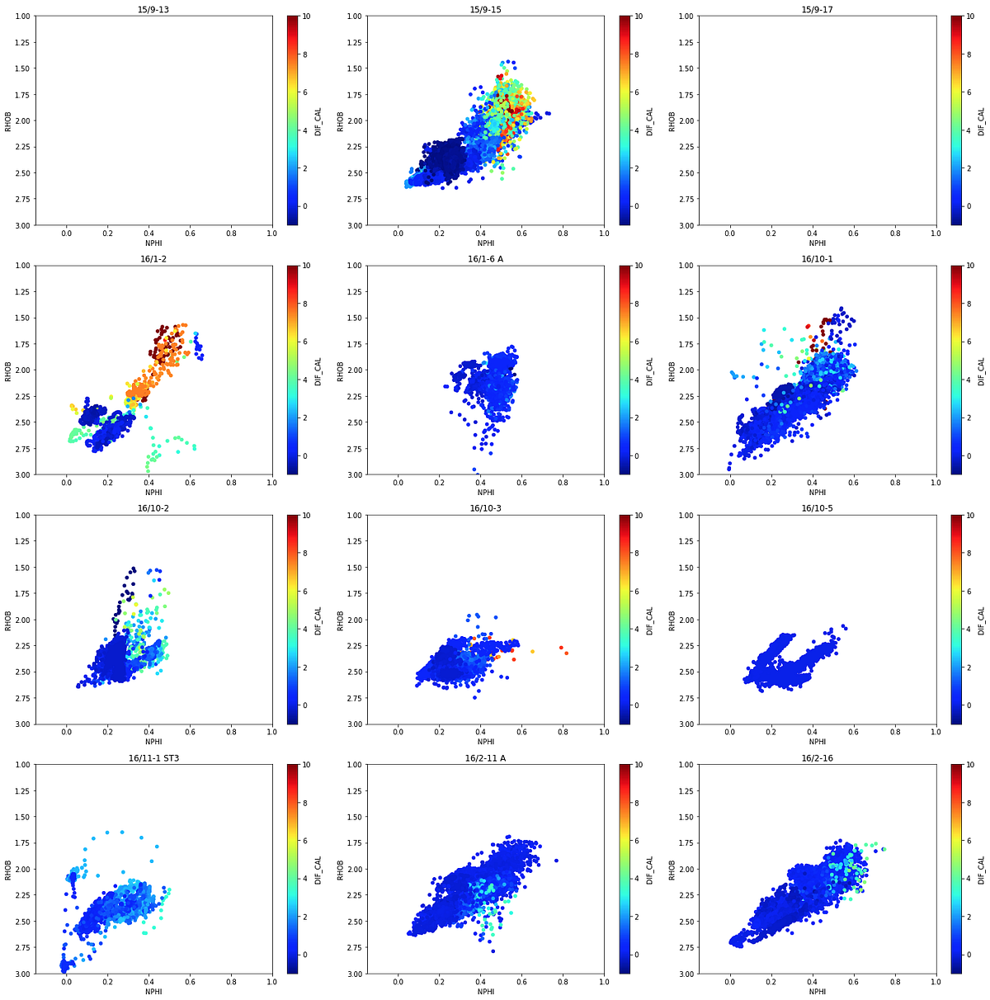
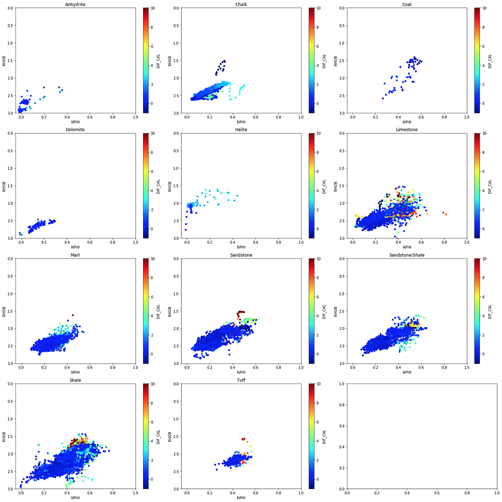

5 Exploratory Data Analysis
Exploratory Data Analysis (EDA) is an essential step before any interpretation or machine learning workflow. It allows us to identify patterns in the data, understand relationships between logging curves, spot potential outliers, and assess data quality. In this chapter, we focus on two key data quality checks: identifying where data is missing and detecting intervals affected by poor borehole conditions.
5.1 Identifying Missing Data
Missing data is one of the most common issues when working with well log datasets. Data can be absent for many reasons including tool failures, budget constraints (tools not run), human error, vintage datasets, or borehole environment issues. Identifying and understanding where data is missing is a critical first step.
5.1.1 Using the missingno Library
The missingno library provides a simple set of visualisations to understand data completeness within a pandas dataframe. It can be installed with:
pip install missingnoAnd imported alongside pandas:
import pandas as pd
import missingno as msnoBarplot
The barplot provides a simple overview where each bar represents a column in the dataframe. The height of the bar indicates how complete that column is. It can be generated by:
msno.bar(df)
On the left y-axis, the scale ranges from 0.0 to 1.0, where 1.0 represents 100% completeness. Along the top of the plot, numbers represent the total count of non-null values in each column.
Matrix Plot
The matrix plot is particularly useful for depth-related or time-series data. It provides a color fill for each column: grey where data is present and white where it is absent.
msno.matrix(df)
The sparkline on the right side of the plot shows where maximum or minimum nullity occurs in the data. This gives a visual sense of how the missing values are distributed rather than just showing totals.
Heatmap
The heatmap identifies correlations in the nullity between columns. Values close to +1 indicate that null values in one column are correlated with nulls in another. Values close to -1 indicate an inverse relationship.
msno.heatmap(df)
Dendrogram
The dendrogram groups columns together based on their nullity correlation using hierarchical clustering. Columns grouped at level zero have directly correlated null patterns.
msno.dendrogram(df)5.1.2 Visualising Data Coverage with Matplotlib
For a more well-centric view of data completeness, we can build a custom coverage plot using matplotlib. This approach creates a fill-based visualisation where each curve is represented as a colored bar, with gaps showing where data is missing.
The first step is to convert the data values to a binary representation: a number when data exists, and a lower number when it is missing:
data_nan = data.copy()
for num, col in enumerate(data_nan.columns[2:]):
data_nan[col] = data_nan[col].notnull() * (num + 1)
data_nan[col].replace(0, num, inplace=True)We then group by well and use fill_betweenx() to create the coverage bars:
grouped = data_nan.groupby('WELL')
labels = ['CALI', 'BS', 'GR', 'NEU', 'DEN', 'PEF',
'RDEP', 'RMED', 'AC', 'ACS']
fig, axs = plt.subplots(1, 3, figsize=(20,10))
for (name, df), ax in zip(grouped, axs.flat):
ax.set_xlim(0, 9)
ax.set_ylim(5000, 0)
ax.fill_betweenx(df.DEPTH, 0, df.CALI, facecolor='grey')
ax.fill_betweenx(df.DEPTH, 1, df.BS, facecolor='lightgrey')
ax.fill_betweenx(df.DEPTH, 2, df.GR, facecolor='mediumseagreen')
ax.fill_betweenx(df.DEPTH, 3, df.NEU, facecolor='lightblue')
ax.fill_betweenx(df.DEPTH, 4, df.DEN, facecolor='lightcoral')
ax.fill_betweenx(df.DEPTH, 5, df.PEF, facecolor='violet')
ax.fill_betweenx(df.DEPTH, 6, df.RDEP, facecolor='darksalmon')
ax.fill_betweenx(df.DEPTH, 7, df.RMED, facecolor='wheat')
ax.fill_betweenx(df.DEPTH, 8, df.AC, facecolor='thistle')
ax.fill_betweenx(df.DEPTH, 9, df.ACS, facecolor='tan')
ax.grid(axis='x', alpha=0.5, color='black')
ax.set_ylabel('DEPTH (m)', fontsize=14, fontweight='bold')
ax.set_xticks([0.5, 1.5, 2.5, 3.5, 4.5, 5.5, 6.5, 7.5, 8.5, 9.5],
minor=True)
ax.set_xticklabels(labels, rotation='vertical', minor=True,
verticalalignment='bottom')
ax.set_xticklabels('', minor=False)
ax.set_title(name, fontsize=16, fontweight='bold')
plt.tight_layout()
plt.subplots_adjust(hspace=0.15, wspace=0.25)
This type of plot gives an immediate visual summary of data availability per well. Gaps in the colored bars indicate missing data, and we can quickly determine which wells and curves are suitable for further analysis.
5.2 Identifying Bad Hole Data
Borehole deterioration can significantly affect the quality of logging measurements. By comparing the caliper (CALI) with the bitsize (BS), we can create a difference caliper that highlights where the borehole has enlarged:
data['DIF_CAL'] = data['CALI'] - data['BS']We can then color our density-neutron crossplots by this difference caliper to identify which data points may be affected by bad hole conditions:
grouped = data.groupby('WELL')
fig, axs = plt.subplots(nrows, 3, figsize=(20,20))
for (name, df), ax in zip(grouped, axs.flat):
df.plot(kind='scatter', x='NPHI', y='RHOB', ax=ax,
c='DIF_CAL', cmap='jet', vmin=-1, vmax=10)
ax.set_xlim(-0.15, 1)
ax.set_ylim(3, 1)
ax.set_title(name)
plt.tight_layout()
Data points with warm colors (high differential caliper) indicate borehole enlargement, which can cause density and neutron measurements to read incorrectly. Identifying these affected intervals early helps ensure that only reliable data is carried forward into interpretation or machine learning workflows.
The same approach can be applied by grouping by lithology instead of well, to check whether certain lithologies are more affected by borehole conditions:

Understanding where badhole conditions exist and which lithologies are affected is important when training machine learning models, as poor quality data in the training set can lead to incorrect predictions.